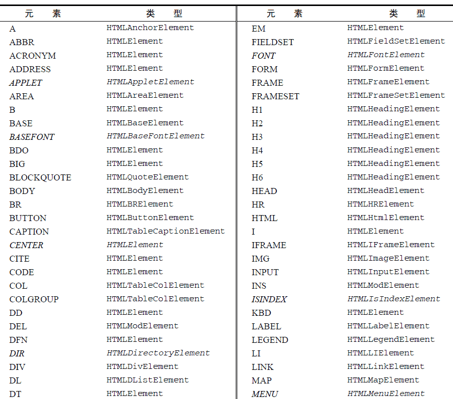
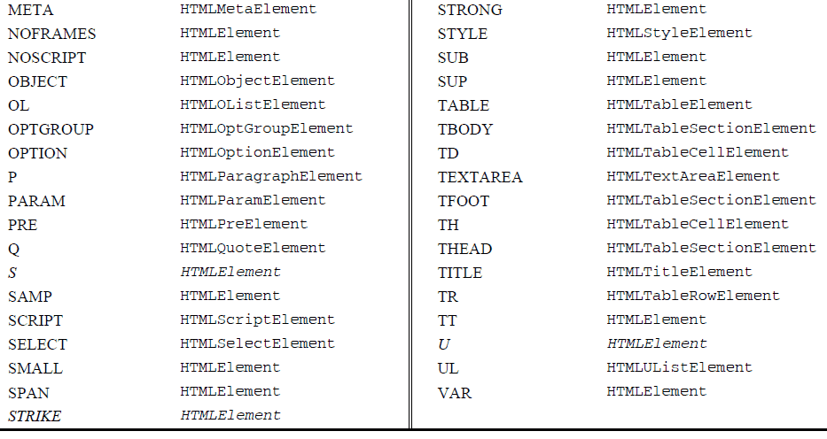

<div id="myDiv"></div>可以像下面这样取得这个元素及其标签名：
var div = document.getElementById("myDiv");
alert(div.tagName); //"DIV"
alert(div.tagName == div.nodeName); //true
这里的元素标签名是div，它拥有一个值为"myDiv"的ID。可是，div.tagName 实际上输出的是"DIV"而非"div"。在HTML 中，标签名始终都以全部大写表示；而在XML（有时候也包括XHTML）中，标签名则始终会与源代码中的保持一致。假如你不确定自己的脚本将会在HTML 还是XML 文档中执行，最好是在比较之前将标签名转换为相同的大小写形式，如下面的例子所示：
if (element.tagName == "div") { //不能这样比较，很容易出错！
//在此执行某些操作
}
if (element.tagName.toLowerCase() == "div") { //这样最好（适用于任何文档）
//在此执行某些操作
}
这个例子展示了围绕tagName 属性的两次比较操作。第一次比较非常容易出错，因为其代码在HTML 文档中不管用。第二次比较将标签名转换成了全部小写，是我们推荐的做法，因为这种做法适用于HTML 文档，也适用于XML 文档。
可以在任何浏览器中通过脚本访问Element 类型的构造函数及原型，包括IE8 及之前版本。在Safari 2 之前版本和Opera 8 之前的版本中，不能访问Element 类型的构造函数。
所有HTML 元素都由HTMLElement 类型表示，不是直接通过这个类型，也是通过它的子类型来表示。HTMLElement 类型直接继承自Element 并添加了一些属性。添加的这些属性分别对应于每个HTML元素中都存在的下列标准特性。
<div id="myDiv" class="bd" title="Body text" lang="en" dir="ltr"></div>运行一下
var div = document.getElementById("myDiv");
alert(div.id); //"myDiv""
alert(div.className); //"bd"
alert(div.title); //"Body text"
alert(div.lang); //"en"
alert(div.dir); //"ltr"
当然，像下面这样通过为每个属性赋予新的值，也可以修改对应的每个特性：div.id = "someOtherId"; div.className = "ft"; div.title = "Some other text"; div.lang = "fr"; div.dir ="rtl";运行一下
并不是对所有属性的修改都会在页面中直观地表现出来。对id 或lang 的修改对用户而言是透明不可见的（假设没有基于它们的值设置的CSS 样式），而对title 的修改则只会在鼠标移动到这个元素之上时才会显示出来。对dir 的修改会在属性被重写的那一刻，立即影响页面中文本的左、右对齐方式。修改className 时，如果新类关联了与此前不同的CSS 样式，那么就会立即应用新的样式。
前面提到过，所有HTML 元素都是由HTMLElement 或者其更具体的子类型来表示的。下表列出了所有HTML 元素以及与之关联的类型（以斜体印刷的元素表示已经不推荐使用了）。注意，表中的这些类型在Opera、Safari、Chrome 和Firefox 中都可以通过JavaScript 访问，但在IE8 之前的版本中不能通过JavaScript 访问。


表中的每一种类型都有与之相关的特性和方法。本书将会讨论其中很多类型。每个元素都有一或多个特性，这些特性的用途是给出相应元素或其内容的附加信息。操作特性的DOM方法主要有三个，分别是getAttribute()、setAttribute()和removeAttribute()。这三个方法可以针对任何特性使用，包括那些以HTMLElement 类型属性的形式定义的特性。来看下面的例子：
var div = document.getElementById("myDiv");
alert(div.getAttribute("id")); //"myDiv"
alert(div.getAttribute("class")); //"bd"
alert(div.getAttribute("title")); //"Body text"
alert(div.getAttribute("lang")); //"en"
alert(div.getAttribute("dir")); //"ltr"
注意，传递给getAttribute()的特性名与实际的特性名相同。因此要想得到class 特性值，应该传入"class"而不是"className"，后者只有在通过对象属性访问特性时才用。如果给定名称的特性不存在，getAttribute()返回null。
通过getAttribute()方法也可以取得自定义特性（即标准HTML 语言中没有的特性）的值，以下面的元素为例：
<div id="myDiv" my_special_attribute="hello!"></div>这个元素包含一个名为my_special_attribute 的自定义特性，它的值是"hello!"。可以像取得其他特性一样取得这个值，如下所示：
var value = div.getAttribute("my_special_attribute");
不过，特性的名称是不区分大小写的，即"ID"和"id"代表的都是同一个特性。另外也要注意，根据HTML5 规范，自定义特性应该加上data-前缀以便验证。任何元素的所有特性，也都可以通过DOM 元素本身的属性来访问。当然，HTMLElement 也会有5个属性与相应的特性一一对应。不过，只有公认的（非自定义的）特性才会以属性的形式添加到DOM对象中。以下面的元素为例：
<div id="myDiv" align="left" my_special_attribute="hello!"></div>因为id 和align 在HTML 中是<div>的公认特性，因此该元素的DOM对象中也将存在对应的属性。不过，自定义特性my_special_attribute 在Safari、Opera、Chrome 及Firefox 中是不存在的；
alert(div.id); //"myDiv" alert(div.my_special_attribute); //undefined（IE 除外） alert(div.align); //"left"运行一下
有两类特殊的特性，它们虽然有对应的属性名，但属性的值与通过getAttribute()返回的值并不相同。第一类特性就是style，用于通过CSS 为元素指定样式。在通过getAttribute()访问时，返回的style 特性值中包含的是CSS 文本，而通过属性来访问它则会返回一个对象。由于style 属性是用于以编程方式访问元素样式的（本章后面讨论），因此并没有直接映射到style 特性。
第二类与众不同的特性是onclick 这样的事件处理程序。当在元素上使用时，onclick 特性中包含的是JavaScript 代码，如果通过getAttribute()访问，则会返回相应代码的字符串。而在访问onclick 属性时，则会返回一个JavaScript 函数（如果未在元素中指定相应特性，则返回null）。这是因为onclick 及其他事件处理程序属性本身就应该被赋予函数值。
由于存在这些差别，在通过JavaScript 以编程方式操作DOM 时，开发人员经常不使用getAttribute()，而是只使用对象的属性。只有在取得自定义特性值的情况下，才会使用getAttribute()方法。
在IE7 及以前版本中，通过getAttribute()方法访问style 特性或onclick 这样的事件处理特性时，返回的值与属性的值相同。换句话说，getAttribute("style")返回一个对象，而getAttribute("onclick")返回一个函数。虽然IE8 已经修复了这个bug，但不同IE版本间的不一致性，也是导致开发人员不使用getAttribute()访问HTML特性的一个原因。
与getAttribute()对应的方法是setAttribute()，这个方法接受两个参数：要设置的特性名和值。如果特性已经存在，setAttribute()会以指定的值替换现有的值；如果特性不存在，setAttribute()则创建该属性并设置相应的值。来看下面的例子：
div.setAttribute("id", "someOtherId");
div.setAttribute("class", "ft");
div.setAttribute("title", "Some other text");
div.setAttribute("lang","fr");
div.setAttribute("dir", "rtl");
运行一下通过setAttribute()方法既可以操作HTML 特性也可以操作自定义特性。通过这个方法设置的特性名会被统一转换为小写形式，即"ID"最终会变成"id"。
因为所有特性都是属性，所以直接给属性赋值可以设置特性的值，如下所示。
div.id = "someOtherId"; div.align = "left";
不过，像下面这样为DOM元素添加一个自定义的属性，该属性不会自动成为元素的特性。
div.mycolor = "red";
alert(div.getAttribute("mycolor")); //null（IE 除外）
这个例子添加了一个名为mycolor 的属性并将它的值设置为"red"。在大多数浏览器中，这个属性都不会自动变成元素的特性，因此想通过getAttribute()取得同名特性的值，结果会返回null。可是，自定义属性在IE 中会被当作元素的特性，反之亦然。
在IE7 及以前版本中，setAttribute()存在一些异常行为。通过这个方法设置class 和style 特性，没有任何效果，而使用这个方法设置事件处理程序特性时也一样。尽管到了IE8 才解决这些问题，但我们还是推荐通过属性来设置特性。
要介绍的最后一个方法是removeAttribute()，这个方法用于彻底删除元素的特性。调用这个方法不仅会清除特性的值，而且也会从元素中完全删除特性，如下所示：
div.removeAttribute("class");
这个方法并不常用，但在序列化DOM 元素时，可以通过它来确切地指定要包含哪些特性。
IE6 及以前版本不支持removeAttribute()。
var id = element.attributes.getNamedItem("id").nodeValue;
以下是使用方括号语法通过特性名称访问节点的简写方式。var id = element.attributes["id"].nodeValue;也可以使用这种语法来设置特性的值，即先取得特性节点，然后再将其nodeValue 设置为新值，如下所示。
element.attributes["id"].nodeValue = "someOtherId";调用removeNamedItem()方法与在元素上调用removeAttribute()方法的效果相同——直接删除具有给定名称的特性。下面的例子展示了两个方法间唯一的区别，即removeNamedItem()返回表示被删除特性的Attr 节点。
var oldAttr = element.attributes.removeNamedItem("id");
最后，setNamedItem()是一个很不常用的方法，通过这个方法可以为元素添加一个新特性，为此需要为它传入一个特性节点，如下所示。element.attributes.setNamedItem(newAttr);一般来说，由于前面介绍的attributes 的方法不够方便，因此开发人员更多的会使用getAttribute()、removeAttribute()和setAttribute()方法。
function outputAttributes(element) {
var pairs = new Array(),
attrName,
attrValue,
i,
len;
for (i = 0, len = element.attributes.length; i < len; i++) {
attrName = element.attributes[i].nodeName;
attrValue = element.attributes[i].nodeValue;
pairs.push(attrName + "=\"" + attrValue + "\"");
}
return pairs.join(" ");
}
运行一下function outputAttributes(element) {
var pairs = new Array(),
attrName,
attrValue,
i,
len;
for (i = 0, len = element.attributes.length; i < len; i++) {
attrName = element.attributes[i].nodeName;
attrValue = element.attributes[i].nodeValue;
if (element.attributes[i].specified) {
pairs.push(attrName + "=\"" + attrValue + "\"");
}
}
return pairs.join(" ");
}
运行一下var div = document.createElement("div");
在使用createElement()方法创建新元素的同时，也为新元素设置了ownerDocuemnt 属性。此时，还可以操作元素的特性，为它添加更多子节点，以及执行其他操作。来看下面的例子。div.id = "myNewDiv"; div.className = "box";在新元素上设置这些特性只是给它们赋予了相应的信息。由于新元素尚未被添加到文档树中，因此设置这些特性不会影响浏览器的显示。要把新元素添加到文档树，可以使用appendChild()、insertBefore()或replaceChild()方法。下面的代码会把新创建的元素添加到文档的<body>元素中。
document.body.appendChild(div);运行一下
var div = document.createElement("<div id=\"myNewDiv\" class=\"box\"></div >");
这种方式有助于避开在IE7 及更早版本中动态创建元素的某些问题。下面是已知的一些这类问题。
if (client.browser.ie && client.browser.ie <= 7) {
//创建一个带name 特性的iframe 元素
var iframe = document.createElement("<iframe name=\"myframe\"></iframe>");
//创建input 元素
var input = document.createElement("<input type=\"checkbox\">");
//创建button 元素
var button = document.createElement("<button type=\"reset\"></button>");
//创建单选按钮
var radio1 = document.createElement("<input type=\"radio\" name=\"choice\" "＋"value=\"1\">");
var radio2 = document.createElement("<input type=\"radio\" name=\"choice\" "＋"value=\"2\">");
}
与使用createElement()的惯常方式一样，这样的用法也会返回一个DOM 元素的引用。可以将这个引用添加到文档中，也可以对其加以增强。但是，由于这样的用法要求使用浏览器检测，因此我们建议只在需要避开IE 及更早版本中上述某个问题的情况下使用。其他浏览器都不支持这种用法。<ul id="myList"> <li>Item 1</li> <li>Item 2</li> <li>Item 3</li> </ul >如果是IE 来解析这些代码，那么<ul>元素会有3 个子节点，分别是3 个<li>元素。但如果是在其他浏览器中，<ul>元素都会有7 个元素，包括3 个<li>元素和4 个文本节点（表示<li>元素之间的空白符）。如果像下面这样将元素间的空白符删除，那么所有浏览器都会返回相同数目的子节点。
<ul id="myList"><li>Item 1</li><li>Item 2</li><li>Item 3</li></ul>对于这段代码，<ul>元素在任何浏览器中都会包含3 个子节点。如果需要通过childNodes 属性遍历子节点，那么一定不要忘记浏览器间的这一差别。这意味着在执行某项操作以前，通常都要先检查一下nodeTpye 属性，如下面的例子所示。
for (var i = 0,
len = element.childNodes.length; i < len; i++) {
if (element.childNodes[i].nodeType == 1) {
//执行某些操作
}
}
这个例子会循环遍历特定元素的每一个子节点，然后只在子节点的nodeType 等于1（表示是元素节点）的情况下，才会执行某些操作。var ul = document.getElementById("myList");
var items = ul.getElementsByTagName("li");
要注意的是，这里<ul>的后代中只包含直接子元素。不过，如果它包含更多层次的后代元素，那么各个层次中包含的<li>元素也都会返回。